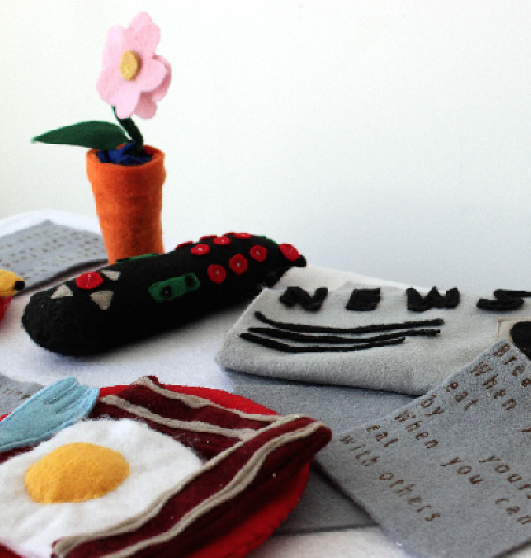
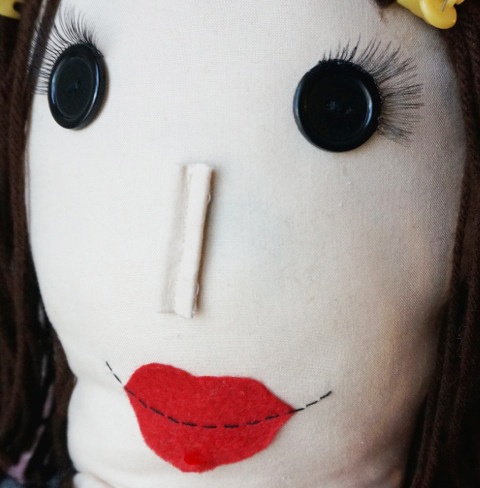
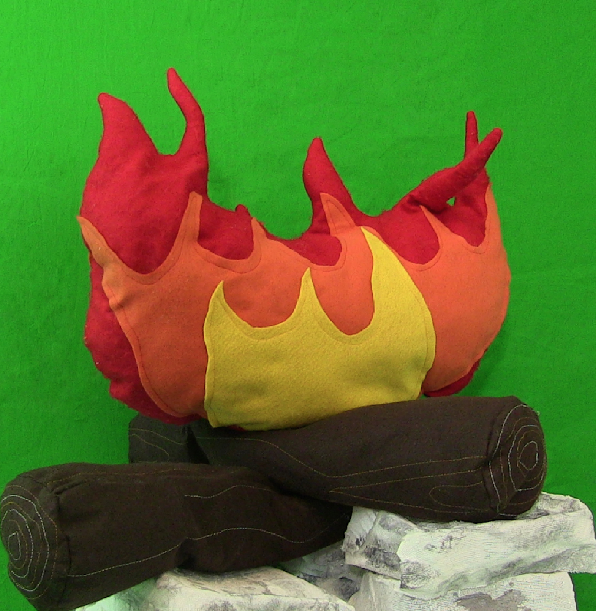
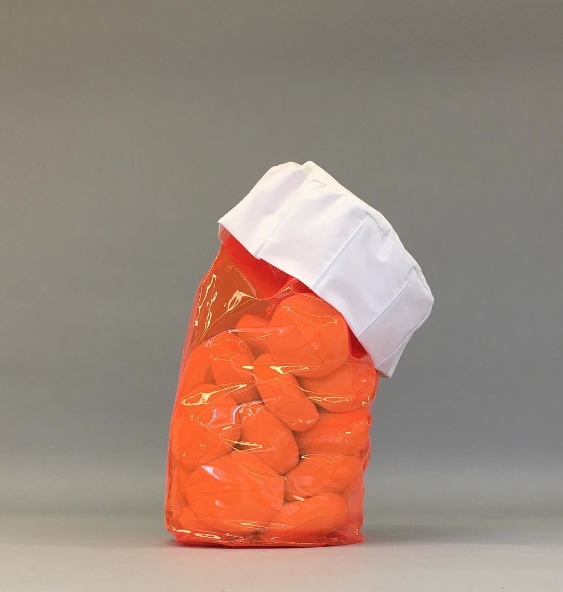

str8fromthegram
/
website
/
sound
/
video
Click on different images to see the various ways I use fiber! :-) :-) :-) :-) :-) :-) :-) :-) :-) :-) :-) :-) :-) :-) :-) :-) :-) :-) :-) :-) :-) :-) :-) :-) :-) :-) :-) :-) :-) :-) :-) :-) :-) :-) :-) :-) :-) :-) :-) :-) :-) :-) :-) :-) :-) :-) :-) :-) :-) :-) :-) :-) :-) :-) :-) :-) :-) :-) :-) :-) :-) :-) :-) :-) :-) :-) :-) :-) :-) :-) :-)

Mm...food

My Friend Will Be Me

Props for Joey's Allegory of the Cave

Fabricated Sleep
Copyright © Joey Scher. All rights reserved.
 str8fromthegram / website / sound / video
str8fromthegram / website / sound / video